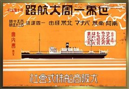

Opa was born Heinrich Goldberger in Ostrava on May 20, 1907. In Opa's words, Ostrava was a town "with coalmines and heavy industry and therefore always dirty, rarely a blue sky but a good business place and people made money." Opa's parents were in the butcher supply business. They owned their own building near the slaughterhouse, with the store on the ground floor and living quarters above.
Opa's father, Ferdinand Goldberger, was born in Myslovice (Moravia) in 1878, and raised in the village of Hrabyne, on the road between Ostrava and Opava, where his parents had a general store. His father Heinrich was born in 1844 in Klecza Dolna, Poland, and died in Hrabyne in 1892. Ferdinand's mother, Henrietta Ritter, was born somewhere in Moravia, and died 1908 in Ostrava. Heinrich and Henrietta had eight children: Ferdinand, Marie, Julius, Siegmund, Gusti, Ludwig, Rudi and Anna.
Opa's mother ran the shop. Opa loved her dearly, and she was a fine businesswoman as well. She was born Helene Tramer, daughter of Nachman Tramer, in April 1884 in Ostrava. Orphaned young, she was raised by relatives. She married Ferdinand in 1903. Henrietta was born in 1905, but died in 1908. Opa arrived next, then Else (1908) and Herta (1915).
In the late 1920s, Opa studied engineering at a college in Bodenbach. Bodenbach, called Podmokly now in Czech, is in the Sudetenland, which was increasingly leaning towards Germany and Hitler in those years. It was there that Opa first encountered significant and persistent antisemitism. When he finished college, the Depression was in full swing and there were no engineering jobs, so he took a job as a salesman with his father. He proved a great natural salesman, and soon was earning more money than his stern father could tolerate. To end their arguments, Opa quit and went to work for the Chungking Import S.A. firm of China. Opa sold the firm's sausage casings in a territory covering Czechoslovakia, Poland, Austria, Denmark and Sweden, and remained with this company until he left Europe.
Aunt Else married Fred Brichta in 1928. Uncle Fred introduced Opa to Oma, who was a distant cousin of his. Opa and Oma married in Hodonín in 1931. Herta married Robert Engle in Ostrava in 1938.
Oma was born Hilde Glück in Hodonín on May 9, 1908. Hodonín (Göding in German) is a provincial seat in the south of Moravia, quite close to the Austrian border. It was the birthplace of Tomas Masyrk and an early center of nationalist resistance to Hapsburg rule over the Czech lands.
Oma's father, Wilhelm Glück, was a merchant in Hodonín. He owned a dry goods store, or perhaps a small department store. He was born on September 27, 1862 in the smaller nearby town of Straznice. The Glück family lived in Straznice for generations. Records in the state archives show that his parents (Baruch Glück and Charlotte Felber), and his grandparents (Samuel and Rösel Glück, Moses and Mirel Felber) lived their lives in Straznice. In fact, the records in Straznice go back to Wilhelm's great-grandparents, who were born in the 1740s. Wilhelm died on January 19, 1931 in Hodonín.
Oma's mother was born Cäcilia Freund on February 7, 1869 in Lovcice, near Kyjov in south-central Moravia. Her parents were Salomon Freund and Marie Jellinek of Lovcice, and she had a brother Berthold and a sister Ester. She and Wilhelm were married in Hodonín on August 11, 1895. Cäcilia passed away from diabetes on December 27, 1916 in Hodonín. Oma was only eight years old. Oma was raised to some extent by her older sister Malonie (born July 1897) and had a brother Igo as well.
Hitler invaded Czechoslovakia in March 1939. Opa wanted to move his family out of Europe, but Dad lacked a valid passport. Opa went by himself to London in March 1939, and was joined by Uncle Fred in 1940. Together they worked to arrange safe passage for their wives and Paul and Dad, but, in Opa's words, "everything went wrong."
After I had the visa for England, war broke out between Germany and England. I left England in 1940 for Rio de Janeiro to be in a neutral country, but after I had the visas and tickets on a boat from Triest to Rio, Italy joined the war and that was the end of that. The last try was to bring them by train from Prague via Berlin-Moscow-Irkutz-Korea to Kobe in Japan. This time it worked.
|  |
The voyage took 41 days from Kobe to Rio on the OSK Line's Montevideo Maru and they arrived on January 12, 1941. Later on, the Montevideo Maru was sunk by mistake on July 1, 1942 off the coast of Luzon, Philippines, by the USS Sturgeon. |
Opa, Oma and Dad lived in a furnished apartment in Copacabana. Dad went to kindergarten, and Opa worked on some business interests in souvenir stores. But Opa did not see a future for them in Rio, and soon applied for visas for the United States. The Goldbergers and Brichtas left Rio on May 20, 1941 on the SS Argentina and arrived in New York on June 2.
Coming to America meant a new beginning, which Opa duly noted by changing the family name to Gordy. But it carried the burden of irrevocable loss. Aunt Else, Uncle Fred and Paul escaped with our family, but Helene and Ferdinand, Herta and Robert all perished. Oma lost her siblings as well. Among cousins and friends, a few did survive. Opa's Uncle Rudi and Aunt Rosa moved their family from Vienna to Perth, Australia in 1939, and we remain in contact with their children and grandchildren. Opa's childhood friend Leo Seifter came to America. Oma's cousins on the Freund side escaped to Israel. I have visited some of our cousins in Haifa, and have been in touch with others in the Czech Republic, UK, Germany, Italy, and Poland.